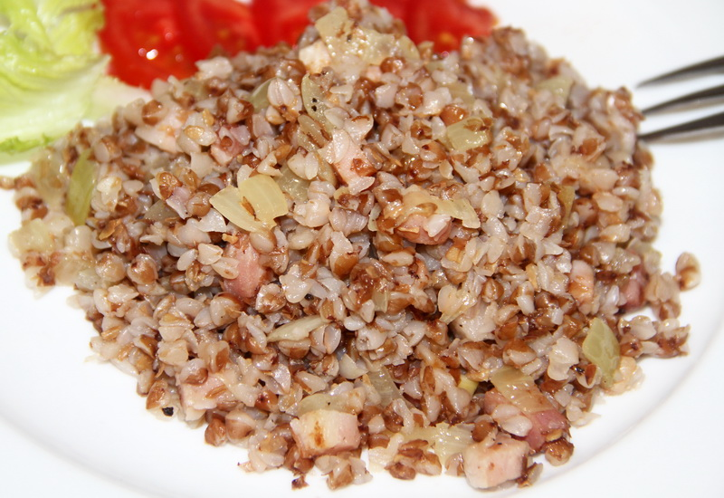

Buckwheat Kasha with bacon

Buckwheat porridge with bacon, cooked in water, is a hearty and rustic dish that combines the earthy, nutty flavour of buckwheat with the rich, smoky notes of crispy bacon. The use of water instead of milk gives the porridge a lighter, more neutral base, allowing the natural taste of the grains to shine through while perfectly complementing the savoury bacon. This simple yet satisfying meal highlights the harmony between wholesome, everyday ingredients — the tender, slightly chewy texture of well‑cooked buckwheat pairs wonderfully with the saltiness and depth that bacon brings to the dish.
The preparation is straightforward: the bacon is typically fried until golden and crisp, then mixed into the fluffy buckwheat or used as a topping for extra crunch. Each bite offers a delightful contrast — the soft, warm porridge against the crunchy, savoury bits of bacon. This comforting dish works well at any time of day: as a filling breakfast to start the morning, a satisfying lunch, or a simple, nourishing dinner. Rustic, flavourful, and easy to make, buckwheat porridge with bacon is a testament to the charm of uncomplicated home‑cooked meals.
Ingredients for 1 person
- buckwheat groats — 60–70 g
- bacon — 50 g
- water — 140–150 ml
- Pinch of salt
- Pinch of black pepper
Steps for prepare macaroni
-
Prepare the ingredientsChop the bacon into small pieces. If using onion, peel and finely dice half a small onion. Have all other ingredients (buckwheat, water, oil, salt, pepper, herbs) ready nearby.
-
Cook the baconPlace a non‑stick frying pan over medium heat. If the bacon is lean, add 1 tsp of vegetable oil. Add the chopped bacon and fry for 3–4 minutes, stirring occasionally, until it starts to crisp up and release some fat.
-
Sauté the onionIf you’re using onion, add it to the pan with the bacon. Stir and cook for 3–4 minutes until the onion becomes soft and slightly golden.
-
Rinse the buckwheatWhile the bacon and onion are cooking, rinse the buckwheat groats under cold water in a fine‑mesh sieve. This removes any dust or impurities and can help prevent bitterness.
-
Combine and simmerAdd the rinsed buckwheat to the pan with the cooked bacon and onion. Stir to coat the grains with the fat and flavours. Pour in 140–150 ml of boiling water (using the 1:2 ratio — 2 parts water to 1 part buckwheat). Add a pinch of salt.
-
Cook the porridgeBring the mixture to a gentle boil, then reduce the heat to low. Cover the pan with a lid and simmer for 12–15 minutes. The water should be fully absorbed and the buckwheat tender. Avoid stirring too often to prevent a mushy texture.
-
ServeTransfer the porridge to a warm bowl. Garnish with freshly chopped dill or parsley for a touch of freshness and colour. Serve immediately while hot.
Home